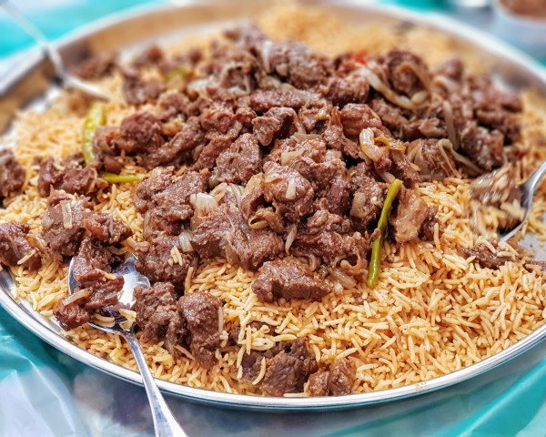
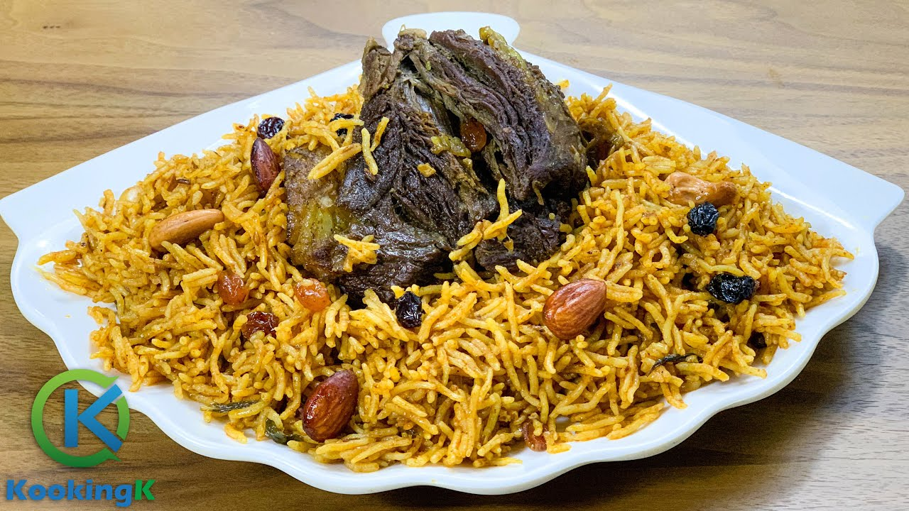

Traditional UAE Cuisine

Shawarma
A popular dish made from seasoned meat roasted on a vertical spit, served with flatbread and vegetables.
Al Harees
A traditional Emirati dish made with wheat and meat, slow-cooked to create a rich, hearty meal.
Majboos
A flavorful rice dish made with chicken or lamb, cooked with spices, vegetables, and dried limes.

Machboos
Another version of Majboos, cooked with fragrant spices and served with meat or seafood.